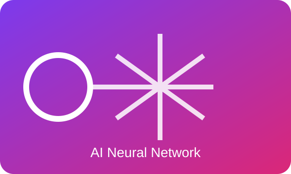

MIS & AI EthicsWebsite OverviewMickey MouseOctober 7, 2026Correct AI UsageStudents can use AI to explain a difficult concept and suggest practice questions. They should compare its claims with course materials and reliable sources. They should disclose help when a course requires it. They must keep responsibility for every submitted choice. The AI agreed and added that students should avoid uploading private information or unpublished work. Benefits of AI
Who Benefits?
How AI Tools Used
Read my AI ethics Word document. Read the same reflection as an AI ethics PDF. Incorrect AI Usage
Incorrect AI use can weaken learning. It can also spread confident errors. I verify important claims. I remain responsible for the work I submit. |